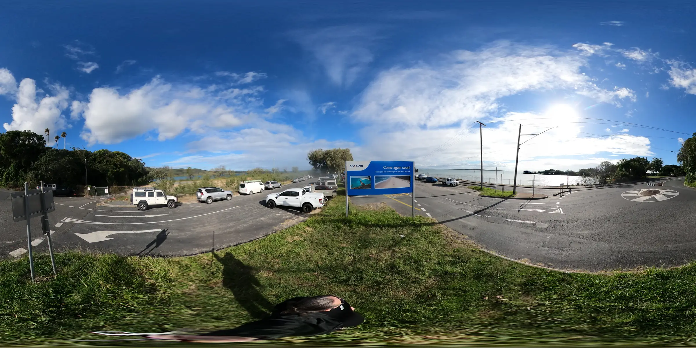
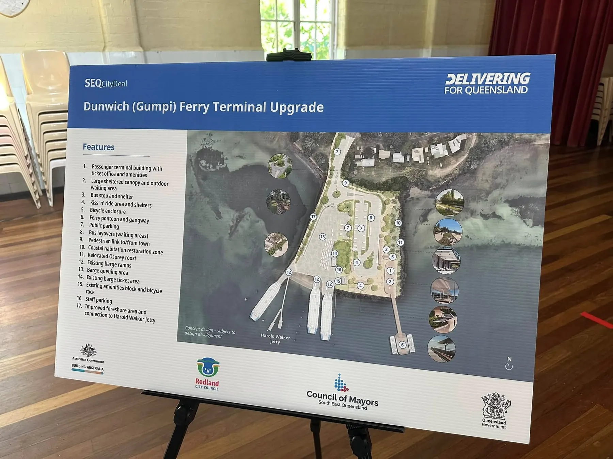

Evidence first
Explore the actual terminal imagery and official project trail. Preserve the real foreshore, terminal approach, terrain and spatial relationships. Community photo derivatives are not survey-grade.
 Sandworm Subterranean SystemsMoreton Bay research & development
Sandworm Subterranean SystemsMoreton Bay research & developmentChapter 03 / 17 · Gumpi business case
A town loop to relieve parking pressure and provide all-weather access.
Transport on Minjerribah only. Both ferry terminals retained.
Proposed first Sandworm project on Minjerribah
The proposed first local infrastructure project is an autonomous subterranean town mobility loop serving Gumpi's principal destinations, linked to a park-and-ride system. The objective is to retain regular passenger ferry operations at both Junner Street and One Mile (Yabby Street), including the Straddie Flyer at One Mile, rather than require operators to consolidate at Junner Street. This is an independent alternative to assess, not a claim that either operator or government has agreed.
The proponent's local observation is that more than 300 cars are regularly parked around the two terminal precincts. This is not an official parking survey or verified peak count. Concentrating passenger services at Junner Street without changing access and vehicle storage could concentrate parking demand at one constrained location. The alternative is to decouple convenient access to both ferries from the need to store cars beside the water.


Three complementary ways to move
Functional relationships only. No route or station location is specified.
Make protected pedestrian movement a primary objective alongside autonomous passenger transport. Investigate comfortable, accessible walking links between One Mile, Junner Street, the town centre, park-and-ride and the other town destinations. Walking is a transport mode in its own right, not merely the last few metres of a vehicle journey.
Compare dedicated pedestrian corridors, appropriately separated walking and vehicle routes, and connections to the existing surface network. Consider everyday rain, wind, heat, accessibility, lighting, wayfinding, ventilation, emergency egress and flood protection. All-weather convenience is an objective, not a guarantee that tunnels can operate during every extreme event.
As the loop is excavated, recovered sand becomes potential manufacturing feedstock for stations, sheltered entrances, seating, shade, paths, service modules and other supporting infrastructure. This is a combined mobility and material production research programme, rather than an ordinary transport project with spoil disposal.
One project produces the materials for another
Potential material pathway, not a proven yield.
Connect the town loop to the material and energy programme. Investigate robotically manufactured quick-fit sandstone or other engineered-sand products, modular stations, walkways, solar shading, service blocks, public space and local manufacturing. Use a material ledger per 100 metres of excavation and compare available material with demand for each product. Explore the original material ledger.
Coordinate energy, water, gravity and other storage, local compute and manufacturing with town mobility. The loop can provide a first integrated research and business-case setting on Minjerribah. The technology may inform independent utility and manufacturing projects elsewhere.


How the debate has evolved
Community concern about retaining One Mile, independent ferry operators, access, all-weather reliability and parking is documented. The proponent expects strong community opposition if amalgamation is pursued. A durable alternative should address the underlying transport problem, rather than rely on postponement or assume that moving services removes parking demand.
The adopted June submission still called for the new facility to accommodate multiple operators and a potential full transfer from One Mile, with preconditions. An October response stated that Council had no endorsed position on consolidation and that future arrangements were for ferry operators and the Queensland Government. These statements do not establish a permanent commitment to retain One Mile. The proponent's concern that a delay might simply defer consolidation is an interpretation, not a verified account of officials' motives. The proposal seeks peaceful, evidence-based community participation.
Council submissions and advocacy · Council parking consultation outcome · June debate reporting · October RTI reporting
Compare retaining both terminals with consolidation, using published transport strategy and community consultation.
The 2024 Minjerribah Public Transport Strategy identifies the separation of ferry terminals as a potential source of passenger confusion and bus inefficiency, and presents consolidation as an option. Action 4.3 records consideration of a single integrated regular passenger ferry facility at Junner Street and retention of One Mile for other uses. The 2023 Gumpi draft master plan consultation summary also records requests to retain the One Mile ferry and concerns about all-weather access at Junner Street. Council recognises longstanding parking pressures at both precincts and has introduced timed parking measures. These sources establish the issue, not an irrevocable decision to discontinue One Mile passenger services.
Public Transport Strategy 2024, priority 4 and action 4.3 · 2023 consultation summary, p. 6 · Council parking in Dunwich · Gumpi Master Plan 2023 · Current terminal upgrade
Sandworm proposes testing whether integration can be achieved through a connected mobility network rather than physically relocating the ferry services. Preserve operational redundancy and customer choice while making transfers and parking easier.
Both ferry terminals, park-and-ride and the principal town destinations are candidate connections; the alignment remains open.
Candidate destinations for community-led demand mapping include Junner Street terminal, One Mile terminal, the town centre, QUAMPI, the Ballow Road sports and community precinct, education and health destinations, residential neighbourhoods and suitable park-and-ride locations. These are candidate nodes, not approved stops, a surveyed route or a fixed alignment. Identify actual demand, land availability, cultural and heritage constraints, geology and flood exposure before choosing locations.
Research an accessible autonomous passenger service with frequent or on-demand connections, integrated ferry and bus information, safe pedestrian and cycle transfers, and access for passengers with luggage or mobility needs. Investigate park-and-ride capacity, pricing, long-stay vehicle storage, security and local residential access with both ferry operators and the community. Retain appropriate surface transport alternatives and emergency access.
The passenger loop is a distinct engineering research programme from the 1 to 1.5 metre robot-serviceable utility corridors. Its vehicle envelope, tunnel diameter, stations, ventilation, life-safety systems, construction technology and operating model remain unspecified. Explore common materials, robotics, simulation and utility infrastructure without assuming passenger tunnels share the smaller service diameter.
Count demand and turnover at both terminals before sizing the park-and-ride system.
| Evidence to collect | Business-case use |
|---|---|
| Simultaneous vehicle counts at both terminals, by location, day and time | Establish combined demand, overflow and peak conditions without double counting. |
| Parking duration and turnover | Separate daily commuters, long-stay storage, residents, visitors, accessible bays and short-stay transfers. |
| Ferry arrivals, passenger origins and destinations | Model travel demand, service frequency and connections to the wider town. |
| Park-and-ride location and capacity options | Test demand shifts, walking and shuttle access, land and lifecycle costs. |
| Surface traffic, environmental and heritage impacts | Compare changes in parking spillover, congestion, public space, accessibility and impacts on Country. |
Use privacy-preserving occupancy counts and aggregated travel surveys rather than collecting identifiable vehicle or passenger records unnecessarily. Test ordinary weekdays, weekends, school holidays and weather disruption. Publish the count method and uncertainty. Do not equate the preliminary 300+ observation with the number of new parking bays required.
Compare both-terminal retention, consolidation, surface transport and a subterranean loop against the same outcomes.
| Option | Scope |
|---|---|
| Reference option | Current Junner Street upgrade and existing ferry operations. |
| Consolidated terminal | Test the effects of moving regular passenger operations to Junner Street, including parking, all-weather reliability and bus integration. |
| Two terminals with surface park-and-ride | Benchmark surface shuttle and active transport improvements, with both passenger ferries retained. |
| Two terminals with Gumpi Town Tunnel Loop | Investigate autonomous subterranean mobility, dispersed parking, connected town destinations and potential shared utility interfaces. |
Compare capital, lifecycle costs, journey reliability, accessibility, parking demand, passenger convenience, operator outcomes, surface land reclaimed, environmental effects, local employment and ownership. Do not assume the existing $41 million allocation can fund the loop. Develop a separate estimate and consider how staged future-ready terminal works could support the alternative.
Develop the spatial baseline and simulation in the existing Gumpi Ferry Terminal Open Data Lab, using its site evidence map, data ladder and simulation workflows. Use actual terminal, town and official design references for any concept imagery. Work with Quandamooka rights holders, ferry operators, council, TMR and local communities to determine whether and how the proposal progresses.
The SEQ City Deal lists a $41 million investment for the Junner Street ferry terminal. TMR's 29 September 2026 project update identifies an upgrade in planning, with the business case expected in late 2026 and broader planning expected to finish in 2027. Consultation ran 28 May to 21 June 2026.
The concept includes a dual-berth passenger pontoon, better ferry/bus transfers, accessible pedestrian links, shelter, parking, retail opportunities, landscaping and improved foreshore connections.
TMR describes the completed four-island SMBI terminal programme as a $48.6 million project, funded by $31.5 million from Queensland and $17.1 million from Council. Completed in October 2023, it provides a regional marine and accessibility comparator, not a direct unit-cost estimate for Gumpi or underground works.
TMR engineering forum: SMBI terminal delivery ↗ · Queensland 2023 delivery awards ↗
The Gumpi Lab provides the spatial evidence, consultation imagery and future scan-to-simulation workflow.
The Dunwich (Gumpi) Ferry Terminal Open Data Lab is the spatial evidence and simulation foundation for this alternative business case. The existing public 360-photo map and consultation display photographs establish the initial reference context. The next planned data layers are drone imagery, photogrammetry and Gaussian splats, LiDAR point clouds, and a public data room with authoritative survey, CAD, GIS, bathymetry and constraint files where release is permitted.
Explore the actual terminal imagery and official project trail. Preserve the real foreshore, terminal approach, terrain and spatial relationships. Community photo derivatives are not survey-grade.
Follow the data ladder and tool spectrum. Use spatial scanning, photogrammetry, Gaussian splats, point clouds, World Labs Marble, Meshy and Blender for their respective reconstruction, world-building, asset and review roles.
Use the design spectrum and evidence, design, simulate, review and share workflow to test new Sandworm-enabled options against the official concept and site evidence. Link to credited community visualisations rather than presenting them as official renderings.
Any future Gumpi-specific concept artwork must use actual site photography, official published concept designs or a traceable spatial reconstruction as reference. Label the reference and the status of the image. Generic ferry terminal artwork is not a substitute. Engineering geometry and quantities require appropriate authoritative data and review. The planned upgrades to the Gumpi Lab will inform subsequent iterations of this business case.
Compare stages and interfaces separately from the funded ferry upgrade.
| Option | Scope | Key test |
|---|---|---|
| A: reference case | Official surface and marine upgrade | Comparable passenger outcomes, cost and schedule |
| B: future-ready interfaces | Reserve utility interfaces and space for future access where warranted | Incremental cost versus avoided future disruption |
| C: separate research pilot | Offsite wet-sand test and later approved demonstrator | Evidence before any terminal excavation |
| D: mature network option | Utility spine, freight and autonomous mobility links, independent emergency infrastructure | Only after geology, approvals, safety and demand are proven |
Accessibility, cost, Country and procurement each require an evidence package.
Accessible paths, transfer time, operational resilience, capacity, shade, evacuation and continuity during construction.
Distinguish funded terminal scope from research, shared utilities, future transport and material-processing investment. No assumption that existing funds can be redirected.
Map land and seabed tenure, cultural heritage, Traditional Owner consent, marine ecology, water supply and utility ownership before siting.
Stage evidence packages and options appraisal with accountable public agencies; secure independent engineering and cost review.
Deliver a reference-design comparison, quantified demand and service outcomes, risk-adjusted capital and lifecycle model, geotechnical unknowns, approvals pathway and an incremental scope with explicit stop points. Use the existing Gumpi open data lab ↗ as the evidence companion. The alternative business case is independent, not an approved terminal project.
Explore interlocking paving for roads, walking paths and cycleways as a potential recovered-sand manufacturing, stormwater, energy and autonomous maintenance research programme.
Explore shared ownership of Sandworm and island community sovereign wealth funds, linking Mutual Futures with long-term local reinvestment and community decision rights.
Investigate robot-accessible utility corridors using the initial 1 to 1.5 metre diameter research range. Sub-seabed utility research is separate from the Gumpi Town Tunnel Loop and does not establish a route from Gumpi to any other island or the mainland. This is infrastructure for servicing utility systems from within a tunnel, not a proposal to lay exposed pipes along the seabed or to carry passengers in this diameter of tunnel. Terminal interfaces, locations and construction timing remain open.
Explore Gumpi as an interface for advanced logistics, autonomous construction, robotics, recovered material manufacturing, regional compute and utility networks. Its role is to develop local capabilities, not an inter-island transport connection.
The Gumpi Town Tunnel Loop is the proposed first project. The long-term transport ambition is to connect the towns and major tourism destinations on Minjerribah itself, including culturally significant places only where access is invited and authorised.
Minjerribah-only transport growth path
Minjerribah only. Indicative growth pathway.
Expand through demonstrated demand, geological evidence, local decision-making and operational capability. The ambition is accessibility within Minjerribah, without assuming every destination requires excavation. A connection may end at an appropriate gateway rather than penetrate a sensitive site.
Quandamooka rights holders and relevant custodians determine whether culturally significant places should be connected, where an access point may be located, who can visit, and which information remains restricted. The network must support permissioned access, including bookings, authorised guides, seasonal restrictions or no access where required. It must not publish restricted cultural locations or use a technical permission system as a substitute for consent. Respect protected areas, wildlife, visitor capacity and existing land tenure.
Accessible autonomous vehicles carrying residents, visitors, luggage and people with mobility needs. Explore demand-responsive and scheduled services.
Autonomous freight and delivery vehicles for local businesses, supplies, groceries and maintenance logistics.
Explore interchangeable or purpose-specific modules, transfer interfaces, charging, routing and coordinated fleets, without choosing a vehicle architecture yet.
The 1 to 1.5 metre utility tunnel concept is for robots maintaining infrastructure. Passenger and freight corridors have their own dimensional and safety research requirements.
People and goods can use an underground transport network through appropriate separation, access control, scheduling and safety design. Protected walking remains a transport option in its own right. No mixed-traffic layout, vehicle dimensions, speed or autonomy level has been specified.
Two tracks from Straddie Fun, the fifth album by Luke Catalyst Nathan Hayes as i C. Infinity, written on 6 June 2026 following the Gumpi consultation. Humour and protest music turn the demand for better evidence and local capability into a public conversation.
14:53 · V5.5
The more reflective track asks for LiDAR, survey data and a site model that locals, Elders, students and builders can actually use. It connects parking, wildlife, business opportunities and skills that stay on the island.
Where's the point cloud, where's the baseline?
Show us what the artists can't
16:49 · V5.5
The sharper satirical track challenges closed project data and lost local capability. It brings together robotic fabrication, geopolymer interlocks, sand batteries, subterranean transport, reef energy and ready SET Co-op.
Public dollars must create more local skills
that’s the law of tidal maths, and a fair go bro
Creative commentary, not a factual allegation about any individual, contractor or government body. The underlying project brief is open public-safe data, transparent comparison, local skills and shared productive ownership.